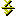

| |
|
Amaya enables you to include mathematical expressions in web pages, using the Mathematical Markup Language (MathML) specification.
Mathematical expressions are handled as structured components, in the same way as HTML elements. Therefore, you can manipulate math expressions in the same way you manipulate other parts of HTML documents. All editing commands provided by Amaya for handling text are also available for math. In addition, there are some other controls for entering mathematical constructs.
You are not required to use the Math menu or palette to create and edit mathematical expressions. You can enter mathematical constructs directly from the keyboard because each item in the Math menu has a keyboard equivalent. These shortcuts are listed on the menu and in the table below. You can also use the keyboard arrow keys to move the insertion point from one math construct to another. The right and left arrows move the insertion point according to the structure of the mathematical expression. For example, in a fraction when the insertion point is at the end of a numerator, the right arrow key moves the insertion point to the beginning of the denominator.
Action |
Shortcut |
New formula (math) |
Ctrl-m Ctrl-m |
Plain text (mtext) |
Ctrl-m Ctrl-x |
Identifier (mi) |
Ctrl-m Ctrl-d |
Number (mn) |
Ctrl-m Ctrl-n |
Operator (mo) |
Ctrl-m Ctrl-g |
Space (mspace) |
Ctrl-m Ctrl-Space |
Character (xxx;) |
Ctrl-m Ctrl-e |
Invisible Times |
Ctrl-m Ctrl-i |
ApplyFunction |
Ctrl-m Ctrl-a |
Root (mroot) |
Ctrl-m Ctrl-r |
Square root (msqrt) |
Ctrl-m Ctrl-q |
Enclose (menclose) |
Ctrl-m Ctrl-c |
Fraction (mfrac) |
Ctrl-m Ctrl-f |
Subscript and superscript (msubsup) |
Ctrl-m Ctrl-b |
Subscript (msub) |
Ctrl-m Ctrl-v |
Superscript (msup) |
Ctrl-m Ctrl-6 |
Under and over (munderover) |
Ctrl-m Ctrl-k |
Under (munder) |
Ctrl-m Ctrl-u |
Over (mover) |
Ctrl-m Ctrl-o |
Parentheses (mrow) |
Ctrl-m Ctrl-p |
Multiscripts (mmultiscripts) |
Ctrl-m Ctrl-s |
Matrix (mtable) |
Ctrl-m Ctrl-t |
To create a mathematical expression in a document, move the mouse cursor to the position where you want to insert an expression, and then click the Math button, or choose Math from the Xml menu.
Mathematical expressions can be inserted into a document using either the Math submenus of the XML menu, or by choosing an expression from the Math palette.
Click the Math button  on the button bar to display the Math palette. Close the palette by clicking the Done button.
You can also display the Math menu by clicking the Math item on the XML menu.
On the Math palette or menu, the first item, New Formula, allows you to create a new formula when the cursor is in a HTML or SVG element, but not within a MathML element.
The Math menu also contains elements which are not
available from the palette. These items include: Plain text
(mtext), Identifier (mi), Number (mn),
Operator (mo). These commands can also change the type of a
single element or a sequence of elements.
The Character (&xxx;) item enables you to enter a
character that is not available on the keyboard. It displays a dialog where
you have to enter the character name (for instance alpha for the Greek
character a).
The next items of the Math menu or palette enable you to create new constructs within a formula. If the insertion point is not in a formula, Amaya first creates a Math element to accept the new construct. The available constructs are:
mroot in MathML: msqrt: menclose: mfrac: msubsup: or msub: msup: munderover: munder: mover: mrow: mmultiscripts: mtable: The last item of the Math palette ( ) displays another palette from which you can insert mathematical symbols and greek characters.
When you type a character string in a MathML element, Amaya parses the string and automatically generates the elements mo (operator), mn (number), mi (identifier), and mtext.
For example, to enter the formula x=2a+b:
x=2a+bUse the Structure view to display the following structure generated by Amaya:
<mi>x</mi><mo>=</mo><mn>2</mn><mi>a</mi><mo>+</mo><mi>b</mi>
If the result is not exactly what you want, select the characters that
were misinterpreted and change their type with one of the commands such as
Plain text (mtext), Identifier (mi), Number
(mn), Operator (mo) or Space (mspace)
from the Math submenu of the Types menu.
Amaya takes care of spacing within math expressions, but in some cases you may need to add some additional space. Move the cursor to the position where you want to insert space and choose Math > Space (mspace) from the Types menu. This creates a default horizontal space. You can then change its width attribute to adjust its size or you can add other attributes (height, depth, linebreak) to change vertical spacing. Refer to the MathML specification for more details.
When entering brackets as in the following expression:
typing the sequence f(x)= would lead to:
Instead, choose Math > Parentheses from the Types menu or select the Parentheses option on the Maths palette to enter the parentheses properly.
Amaya provides the same method to create and edit matrices as to edit HTML tables. Similar to tables, a specific command (Delete matrix column) deletes a column in a matrix, even if it's not empty. This command is located at the end of the Math submenu on the XML menu.
You may want to change the structure of an existing expression, such as appending a superscript or putting parentheses around an expression. To do that, select the expression and enter the new construct with the palette, the Math menu or the keyboard. You can also use Transform on the Edit menu. Select the expression you want to transform and Transform will display a menu with all possible changes.
MathML structure in a document can be viewed by choosing Show Structure from the Views menu. Choosing this option opens the Structure view, which reveals the main structure of the document, the math elements, and their contents.
Math expressions can be edited in the main view or in the Structure view.
The Structure view is especially helpful to avoid ambiguity. For example, in the equation below, placing the cursor after character“ b,” it is not clear whether you wish to add something within the square root or after it.
Selecting (or checking) in the Structure view avoids any misselections. You can also check the status line at the bottom of the main window.
You can create and use links in mathematical expressions. These links are represented using a draft version of the XML Linking Language (XLink). Only simple unidirectional hyperlinks are available, but you can associate a link with any part of a formula. For example, the fraction in the formula below is a link to the W3C home page:
Double-clicking any character within the fraction loads the W3C home page.
To create such a link, select a math expression (the fraction in the above example), click the Link button (or choose Create or change link from the Links menu), and click the desired target.
If the target is an expression in a formula, you must first turn the
expression into a target. Select the expression and choose Create
target from the Links menu to create an
id attribute for the target expression.
The following are known Amaya MathML issues:
display, alttext, mathvariant, mathsize, mathcolor,
mathbackground, fontsize, fontweight, fontstyle, fontfamily, color,
linethickness, numalign, denomalign, bevelled, notation, lquote, rquote,
lspace, rspace, largeop, movablelimits, subscriptshift, superscriptshift,
form, width (mspace only), height (mspace only),
depth (mspace only), align, rowalign, columnalign,
frame, framespacing, displaystyle, side, rowspan, columnspan, rowspacing,
columnspacing, rowlines, columnlines.
class, id, and
style attributes are available, with the same semantics as
in HTML: you can associate CSS styles with MathML elements
(class and style attributes) and a MathML
element can be the target of a link (id
attribute).Therefore, SuchThat, DownTee, Or, And, Not, Exists,
ForAll, Element, NotElement, NotSubset, Subset, SubsetEqual, Superset,
SupersetEqual, DoubleLeftArrow, DoubleLeftRightArrow, DoubleRightArrow,
LeftArrow, LeftRightArrow, RightArrow, Congruent, GreaterEqual, le,
NotEqual, Proportional, VerticalBar, Union, Intersection, PlusMinus,
CirclePlus, Sum, Integral, CircleTimes, Product, CenterDot, Diamond,
PartialD, DoubleDownArrow, DoubleUpArrow, DownArrow, UpArrow,
ApplyFunction, TripleDot, DifferentialD, ImaginaryI, ExponentialE,
InvisibleComma, UnderBar, OverBar, ThinSpace, ThickSpace, Hat, OverBar,
UnderBar, prime, Prime.